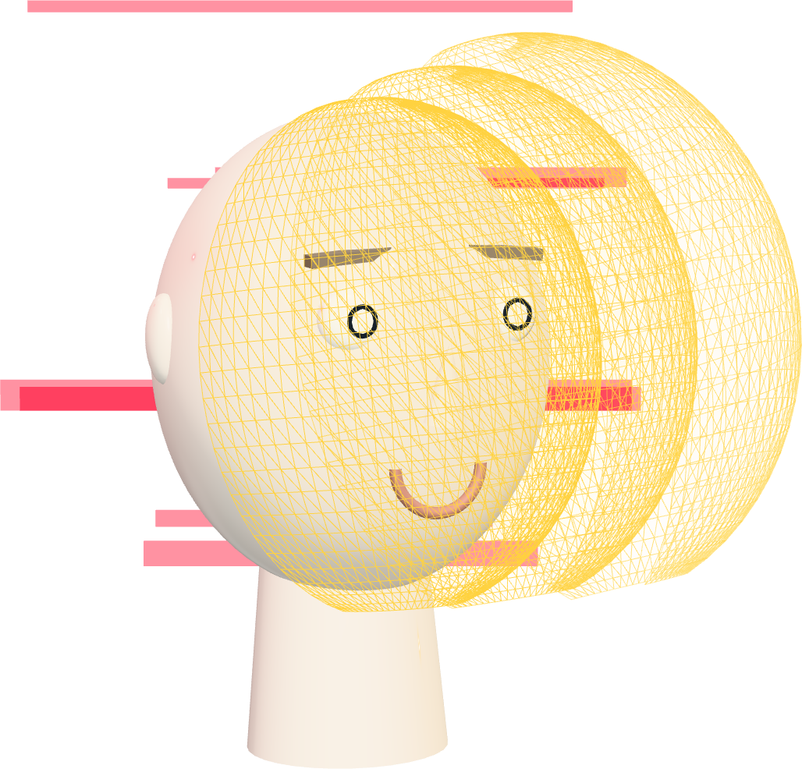
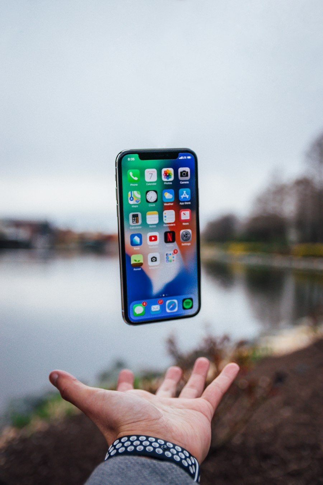
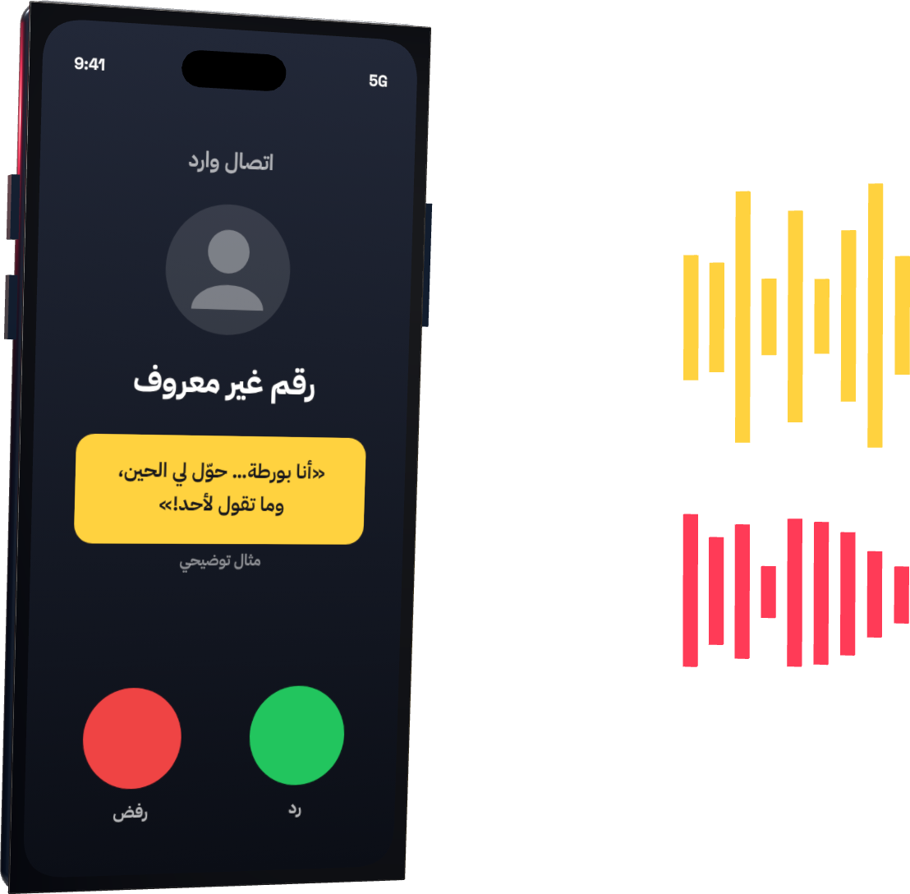
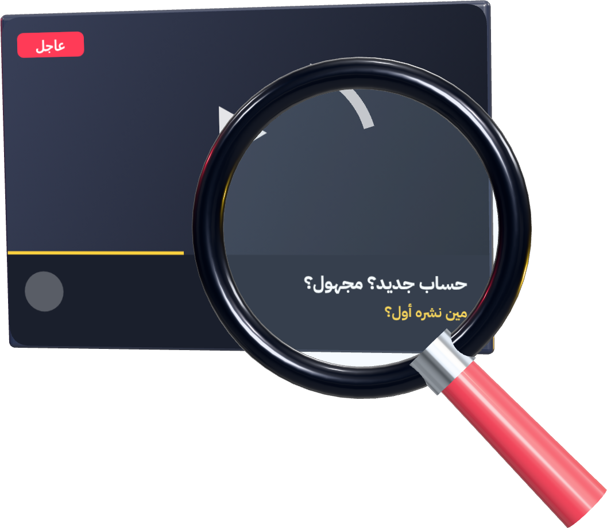
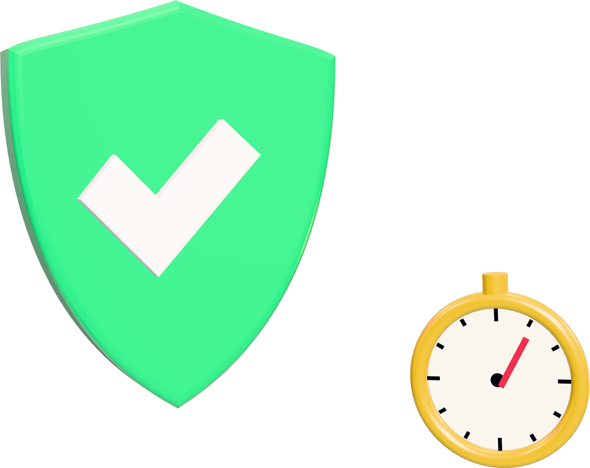

تقنية · فيديو مزيّف
هذا الفيديو مو حقيقيوأغلب الناس صدّقوه

REC
كيف تكشفه بـ 3 فحوصات قبل ما تصدّق أو تنشر؟
اسحب ←
{{HANDLES}}
تقنية · فيديو مزيّف
2/7
شفته… يعني صح؟

كل شي يبان حقيقيمقلَّدوجه · صوت
الذكاء الاصطناعي صار يقلّد الوجه والصوت. وحسب تغطيات تحذير FTC، مقاطع قصيرة منشورة بالإنترنت تكفي لاستنساخ صوت
ومشروع Detect Fakes من MIT يقول: ما فيه علامة وحدة تكشف كل التزييف. فنحتاج ثلاث فحوصات مع بعض
تقنية · فيديو مزيّف
3/7
فحص 1: الوجه

1الرمش: قليل أو كثير بشكل غريب؟
2الشفاه: حركتها تطابق الكلام فعلاً؟
3العينين والنظارة: الانعكاسات من نفس مصدر الضوء؟
4البشرة: تناسب عمر العين والشعر؟
علامات تساعدك، مو دليل قاطع: الفيديو المتقن ممكن يعدّي منها كلها
تقنية · فيديو مزيّف
4/7
فحص 2: الصوت

3 علامات خطر في المكالمة
استعجال: «حوّل الحين!»
سرّية: «لا تقول لأحد»
دفع غريب: طريقة تحويل ما تعرفها
اقفل… واتصل أنت على رقمه المحفوظ عندك، مو الرقم اللي اتصل
صوت قريبك ممكن يكون مستنسخ، فالصوت لحاله ما يكفي
مثال توضيحي · نصيحة الاتصال العكسي من تغطيات تحذير FTC
تقنية · فيديو مزيّف
5/7
فحص 3: المصدر

1مين نشره أول؟ حساب معروف ولا جديد ومجهول؟
2ابحث عن الخبر بكلماته: هل تغطيه جهة موثوقة؟
3شوف علامة «محتوى ذكاء اصطناعي» لو موجودة
TikTok يعلّم محتوى الذكاء الاصطناعي تلقائياً (من مايو 2024)، بس غياب العلامة ما يثبت إن الفيديو حقيقي
تقنية · فيديو مزيّف
6/7
القاعدة: وقّف قبل تصدّق

وقّفلا تعيد النشر
←
افحص3 فحوصات
←
أكّدمن مصدر ثاني
الفيديو اللي يخوّفك أو يستعجلك أو يطلب فلوس… هو بالضبط اللي يحتاج وقفة
اتفقوا في العيلة: أي طلب فلوس نتأكد منه بمكالمة ثانية على رقم نعرفه
تقنية · فيديو مزيّف
7/7
لا تصدّق عينك
صدّق التحقق
علي التميمي
كل يوم معلومة تقنية تهمّك
أرسلها لأحد يصدّق كل فيديو يشوفه 👇